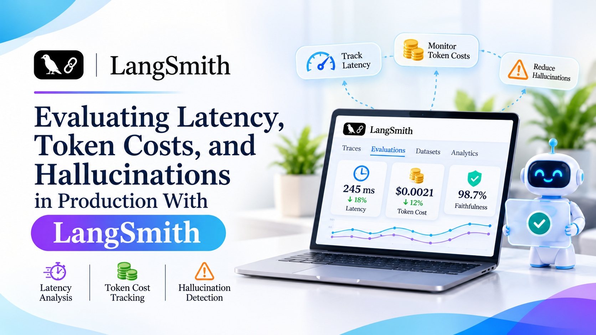

Evaluating Latency, Token Costs, and Hallucinations in Production With LangSmith

A demo has one user and one happy path. Production has thousands of users, messy inputs, slow days, and a monthly bill. The question changes from "does it work?" to "how fast, how expensive, and how often is it wrong?" Teams that cannot answer those three questions with numbers are running on hope.
Why Production Needs Measurement
LLM applications fail quietly. A slower retriever, a longer prompt, or a model update can raise cost or lower quality without a single error being thrown. Without traces and scores, you learn about it from a user complaint or a surprise invoice.
Teams that want production-ready LLM orchestration solutions treat measurement as part of the architecture, not an afterthought. Every step is traced, every change is scored, and every release has to pass a quality gate first.
The Metrics That Matter
| Area | Measure | Why it matters |
|---|---|---|
| Latency | End-to-end time, time to first token, p50, p95, p99 | Averages hide the slow requests users remember |
| Latency by step | Retrieval, reranking, model call, tool calls | Shows which step to fix first |
| Token cost | Input tokens, output tokens, cost per task and per user | Cost scales with usage and prompt size |
| Hallucination | Groundedness, citation correctness, unsupported claim rate | Wrong answers erode trust fastest |
| Abstention | Rate of correct "I do not know" answers | Declining beats inventing |
| Errors and retries | Failures, timeouts, rate limits, retry counts | Hidden retries inflate cost and delay |
Track the three headline areas together. A change that cuts cost but raises the hallucination rate is not an improvement.
Tracing Every Step
A trace records each step of a request: the retrieval query, the documents returned, the prompt sent, the model response, and the time and tokens each step used. With traces, a bad answer becomes a specific, inspectable event instead of a mystery.
# Environment (names can change between versions)
LANGSMITH_TRACING=true
LANGSMITH_API_KEY=<your key>
LANGSMITH_PROJECT=support-assistant-prod
# Application code
from langsmith import traceable
@traceable(name="answer_question")
def answer_question(question: str, user_id: str):
docs = retrieve(question)
return generate(question, docs)SDK names and settings change between releases. Check the current LangSmith documentation before you build.
- Tag every trace with user tier, feature, model, and prompt version so you can slice results.
- Redact sensitive data before it reaches your tracing project.
- Sample wisely. Trace everything in staging and a defined share in production.
Datasets and Offline Evals
Offline evaluation runs a fixed set of questions through your application and scores the results before release. It is how you compare a new prompt, model, or retriever against the current one fairly.
- Collect real examples. Pull representative questions from traces and support logs.
- Add reference answers or sources. Note which documents should be retrieved.
- Include hard cases. Add ambiguous questions, missing-evidence questions, and past failures.
- Score with evaluators. Combine code checks, model-based judges, and periodic human review.
- Compare runs side by side. Look at quality, latency, and cost for every candidate.
Model-based judges are useful but imperfect. Calibrate them against human-labeled samples and recheck them whenever the judge model changes.
Online Evaluation
Real traffic reveals problems that a fixed dataset cannot. Score a sample of live traces automatically and feed the worst ones back into your dataset.
- Groundedness checked on a sample of live answers
- User feedback such as thumbs down linked to the trace
- Failed and slow traces collected into a review queue
- Reviewed failures added to the golden dataset
- Drift watched by re-scoring the same dataset on a schedule
Alerts and Budgets
| Signal | Alert when | Typical response |
|---|---|---|
| p95 latency | It rises beyond your agreed target | Inspect the slowest step in recent traces |
| Cost per task | It climbs faster than usage | Check prompt length, retries, and model choice |
| Groundedness | It falls below your baseline | Review retrieval and recent prompt changes |
| Error rate | Failures or timeouts spike | Check provider status and fallback behavior |
| Daily spend | A team or tenant exceeds its budget | Throttle, cap, or investigate the source |
Set targets from your own baseline rather than copying numbers from other teams.
A Debugging Workflow
- Find the trace. Start from the complaint, the alert, or a low-scored run.
- Read each step. Check retrieved documents before blaming the model.
- Classify the cause. Retrieval miss, prompt issue, model behavior, or tool failure.
- Fix one thing. Change a single variable so the effect is clear.
- Re-run the dataset. Confirm quality, latency, and cost before shipping.
- Add the case. Put the failure into the dataset so it never returns unnoticed.
FAQs
What is LangSmith used for?
It is a platform for tracing, evaluating, and monitoring LLM applications, so teams can see each step of a request and score quality, latency, and cost.
How do we measure hallucinations?
Common approaches check whether each claim is supported by the retrieved sources, whether citations are correct, and whether the system declines when evidence is missing. Combine automated checks with human review.
Are model-based judges reliable?
They are useful at scale but imperfect. Calibrate them against human-labeled examples and recheck them when the judge model changes.
How do we control token costs?
Trace tokens per step, shorten prompts, retrieve fewer and better passages, cache where appropriate, and route simple tasks to smaller models.
Should we trace all production traffic?
Not necessarily. Many teams trace a defined sample plus all errors and low-scoring runs, and redact sensitive data first.
Conclusion
Production LLM quality is measured, not assumed. Trace every step, keep a golden dataset, score latency, cost, and groundedness together, and let those numbers gate every release. That discipline is what turns a promising demo into a system you can run with confidence.